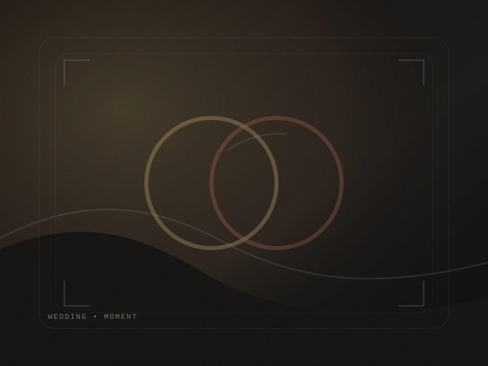
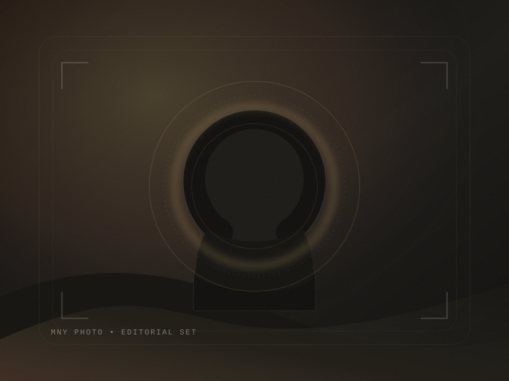
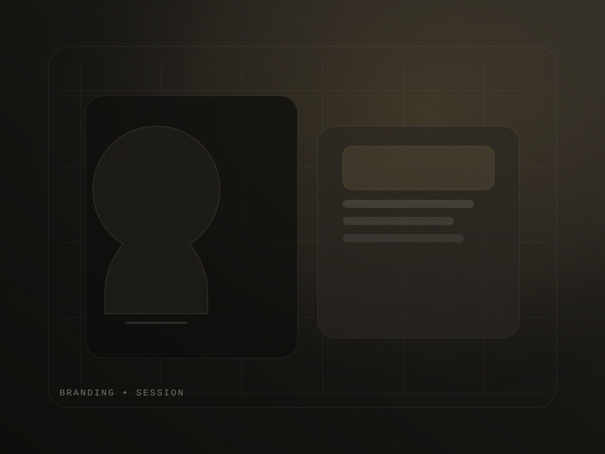
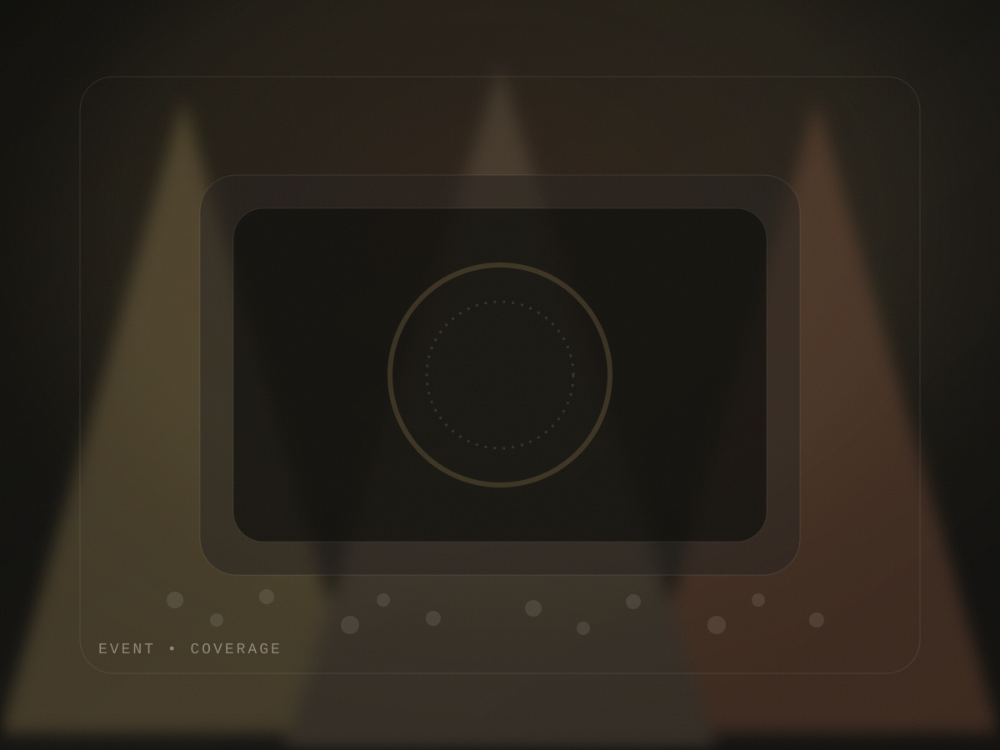
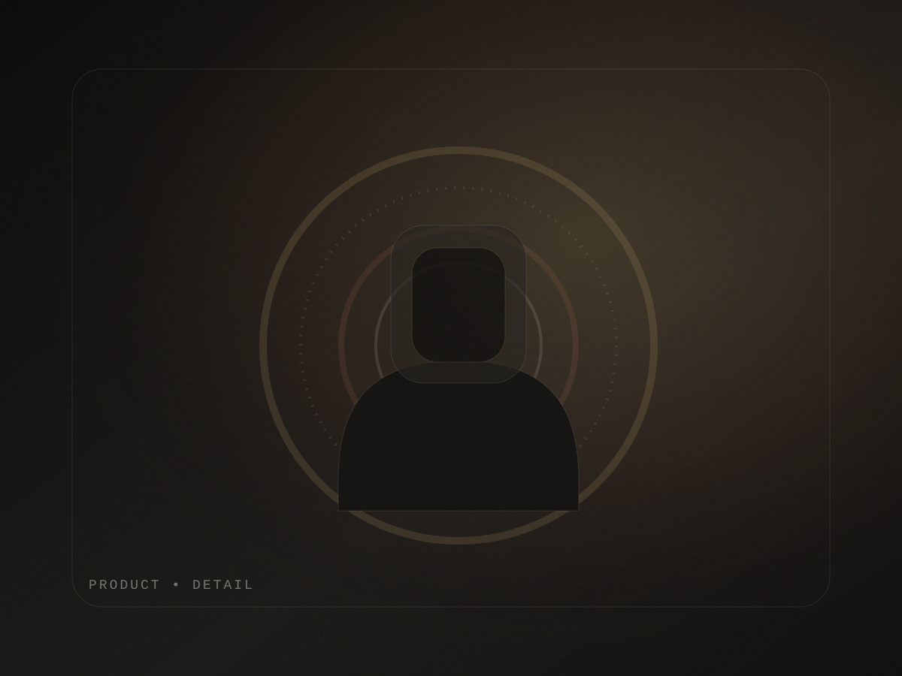
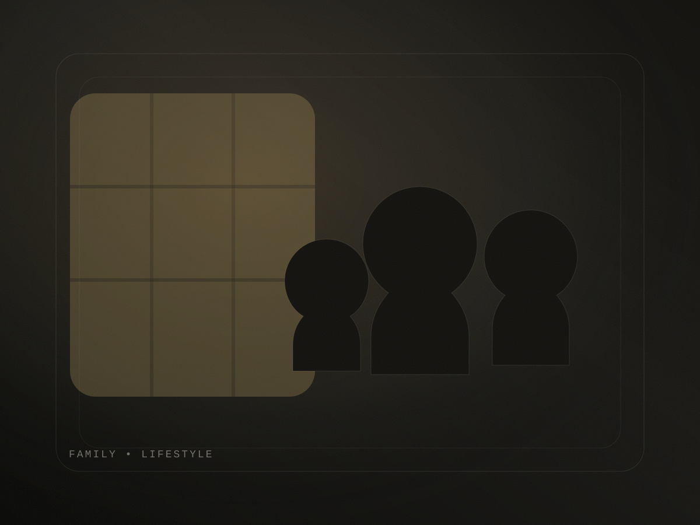
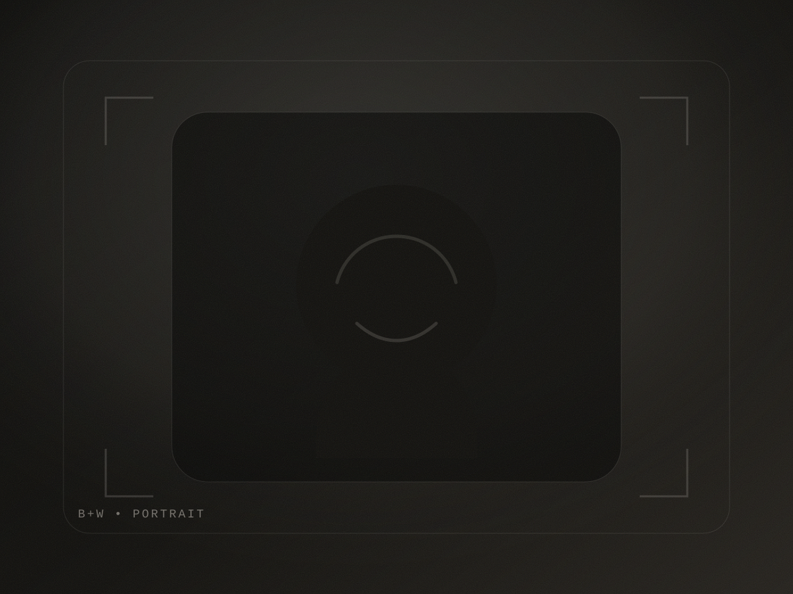
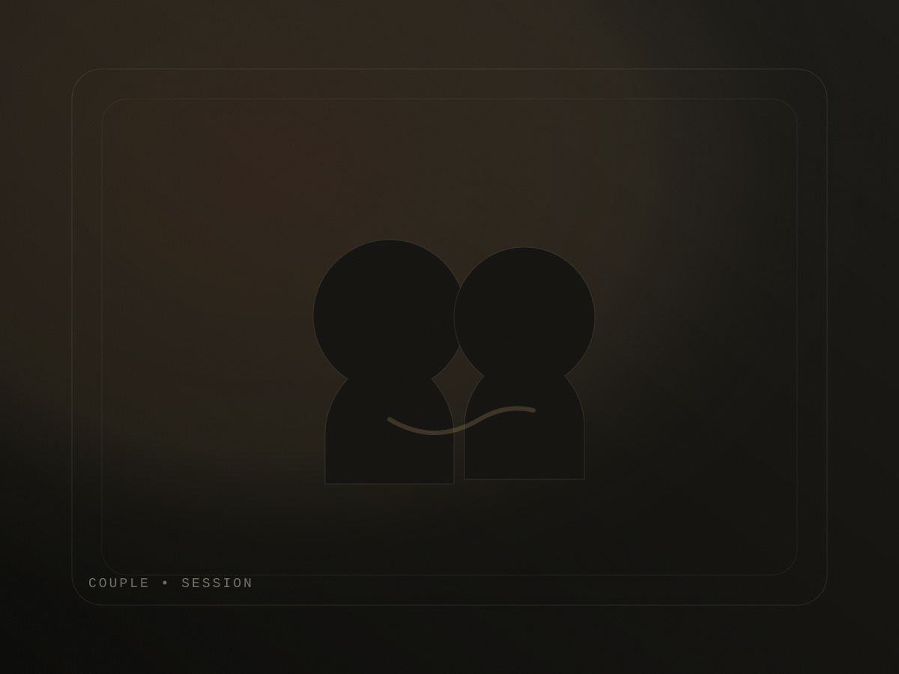
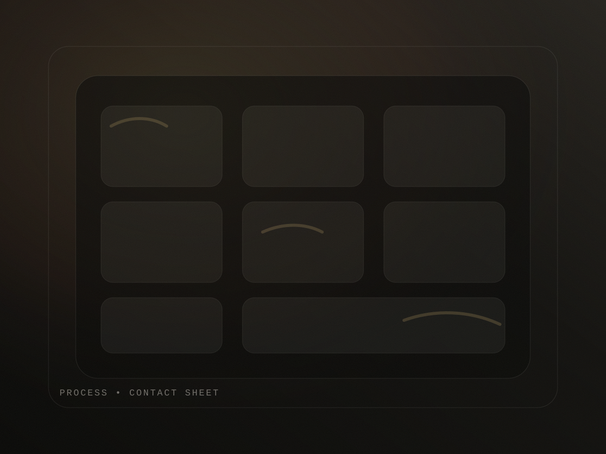
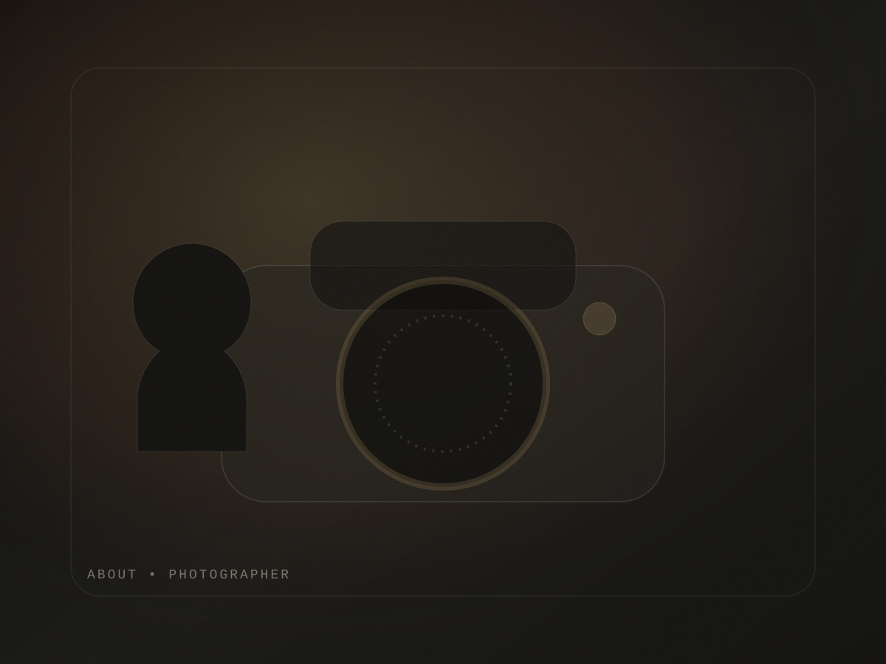

Wedding, slow cinema
Glances, movement, and light you can feel.
MNY Photo
From weddings to brand sessions, we build images that feel like a film still: quiet luxury, honest emotion, precise light.
Prefer email? Write to hello@mnyphoto.example.

Brand statement
MNY Photo works like an editorial team: we shape the mood, simplify the plan, and photograph what matters. The result is timeless imagery with cinematic depth—built for real life, not performance.
Portfolio
These are SVG placeholders for the theme demo. Replace with real photography in WordPress media.

Glances, movement, and light you can feel.

Editorial portraits built for premium websites.

Candid moments with intentional framing.

Soft highlights, precise textures, rich contrast.

Warm motion with space to breathe.

Shape, shadow, and timeless composition.

A narrative set—directed, never stiff.
Clean lines. Soft light. An editorial finish.
Services
Choose a starting point—then we tailor the plan around your story and the light.
Cinematic coverage with editorial pacing—built around moments, not a shot list.
Premium portraits and detail frames designed for web, press, and launches.
A relaxed, art-directed set with movement prompts and timeless composition.
Warm lifestyle photography—quiet, honest, and never overly posed.
Brand launches, dinners, and celebrations with discreet coverage and clean frames.
Cinematic product sets with rich texture and controlled highlights.
Booking
Experience
We keep planning simple and focused, so you can stay present and the photos can breathe.

Signature style
We photograph what the light is already doing—then refine.
Images read like a story: wide, detail, portrait, breath.
Clear prompts that keep you present—never posed to exhaustion.
Ivory highlights, soft shadows, and rich midtones.

About
MNY Photo is built for clients who want images that feel elevated without feeling performed. We work with gentle prompts, clean composition, and an editorial eye for shape and light.
Expect an experience that’s calm and organized: a simple plan, clear next steps, and a gallery that reads like a story—wide frames, details, and portraits with presence.
This theme is a demo template. Replace imagery, text, and booking policies with your real business details.
Planning
Direction
Finish
Delivery
Testimonials
“Every photo felt like it belonged in a magazine, but we still looked like ourselves.”
“The direction was so calm. We walked, laughed, and somehow it all looked cinematic.”
“Brand photos that actually match the site. Texture, tone, and spacing were perfect.”
Investment
No placeholder pricing here. Share your date, city, and what you’re creating, and we’ll recommend a collection.
FAQ
Yes—through editorial direction. You’ll get simple prompts and adjustments that keep movement natural and expressions real.
After booking, you’ll receive a styling guide with color palettes, texture notes, and do/don’t examples for a timeless look.
We’ll pick based on light, mood, and how you want the images to feel. Indoor options are always on the table.
Yes—travel is available by request. Share your city and date, and we’ll confirm feasibility and timing.
Retouching is light and editorial: skin is refined, not blurred; tones stay believable; details remain crisp.
Journal
In WordPress, publish posts to populate this section automatically.
No posts yet
Use posts to share session tips, location notes, and behind-the-scenes stories.
Idea
Textures, neutrals, and movement—style guidance that photographs timelessly.
Idea
A simple approach: choose the mood, then let the light lead.
Contact
Send a note with your date and the mood you want. We’ll reply with next steps and a recommended collection.
Demo address used for theme preview. Replace with your real inquiry email.
If you prefer a form, add a contact form plugin and place it here.